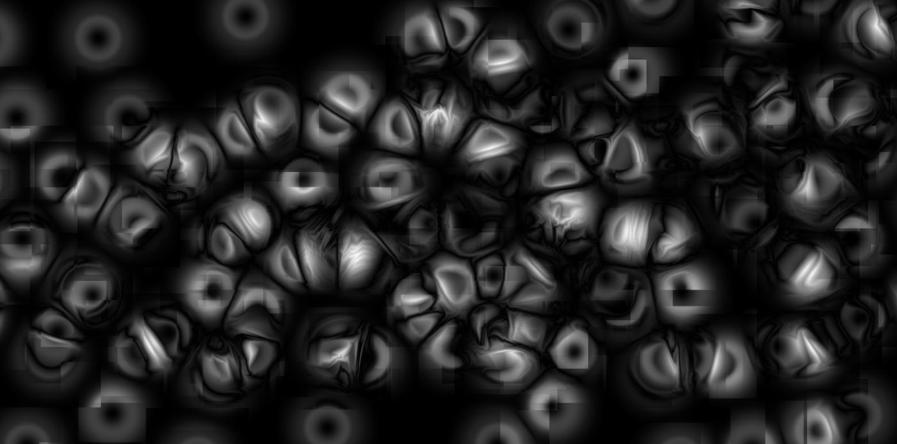
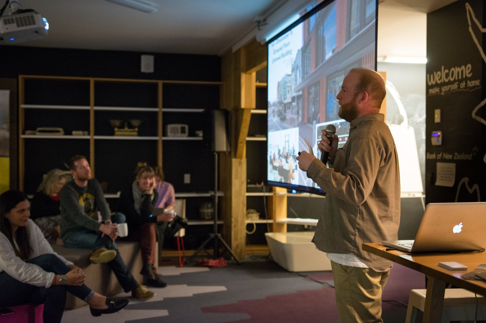

Digital Artist
Ronan Whitteker has been making digital art for 13 years. Working with the mathematics of perception, including fractals, non-linear dynamics and the fourier transform. Ronan creates a wide variety of compelling artwork that relates to many topics from time and space and the body to the aesthetics of music. His art is often interactive (Virtual Reality and 3D cameras) and animated, employing both 2D and 3D techniques
Social and Respectful
"I think it's really important to recognise that not everybody has had the same opportunities and freedoms. Treating people with respect removes barriers to participation and encourages cooperation. Being able to follow and share my passion for technology has been a special privilege."
Digital Extraordinary
I'm a self taught programmer, although having a degree in computer engineering made it relatively straightforward. For me, using computers has developed from an exciting hobby into a career and lifelong passion. There's been some amazing work put into software accessible to the average programmer and I'm always excited to see the next innovation.
I did this talk in 2017 about the philosophy of art in artificial intelligence
Experience
Working in Quality Assurance for Serato where we had to maintain the quality of high performance software was an important part of my learning how to be reliable and work well under pressure. My experience as a Patent Executive in a law firm taught me about time management and tested my communication skills in exams and courses where I excelled.
I also love building and gardening and often do this type of work to get by.
Contact:
Email:
Ronan.Whitteker@gmail.com
Twitter:
twitter.com/OverComplete_
for more information contact our administrator at technocr8@gmail.com